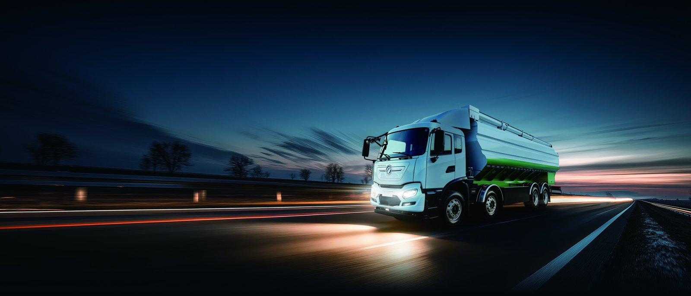

Sticker price is what buyers see; total cost of ownership is what they pay. This guide works through the real numbers for a KT5L electric cargo truck in Indonesia. See the KT5L electric cargo truck page and our Indonesia electric truck market guide.
The sticker price of a KT5L is higher than a comparable diesel, and that is the number everyone sees. The number that matters is cost per kilometre delivered over the life of the truck. With a real-world range of 240-270 km, an 282 kWh pack and dramatically lower energy and maintenance costs, an electric truck in Indonesia typically undercuts diesel on total cost of ownership within the first three to five years, and often sooner where diesel is expensive or heavily taxed.
Four lines decide the comparison: energy, maintenance, finance and residual value. Energy: electricity in Indonesia usually costs a fraction of diesel per kilometre. Maintenance: no oil, filters, or aftertreatment, so workshop spend falls sharply. Finance: a higher purchase price means higher interest, which narrows the gap. Residual: a firmly covered battery warranty supports stronger resale. When all four are modelled honestly, the electric KT5L is the lower-cost truck on high-utilisation duty cycles.
| Specification | KT5L value |
|---|---|
| Configuration | 6x4 electric cargo truck |
| Battery | CATL LFP 282 kWh |
| Drive motor | LvKong PMSM 282 kW (1,900 Nm) |
| Real-world range | 240-270 km |
| DC charge | 20-80% in 45-55 min |
| Capacity | payload 15-18 t |
| Battery warranty | 8 years / 4,500 cycles to 70% SOH |
| FOB China price | US$76,000-94,000 |
The fuel saving is the headline, and it is large. A KT5L doing a typical nickel and coal haulage plus urban logistics cycle in Jakarta, Surabaya and Balikpapan consumes electricity worth far less than the diesel it replaces, and the gap widens with every fuel-price spike. Because the pack is charged mainly at the depot, often from off-peak or solar power, the effective energy cost is stable and predictable, which also protects the fleet from fuel-price volatility. For Indonesian operators, this price certainty is a strategic benefit, not just an accounting one.
Diesel trucks lose revenue in the workshop: engine services, aftertreatment faults, oil and filter changes. The KT5L removes most of that. Tyres, brakes and inspections dominate its maintenance schedule, and the regen braking extends brake life. Fewer unplanned stoppages mean higher fleet availability, which on a busy Indonesia operation can be worth more than the direct parts saving. Uptime is the hidden line item that makes the electric case stronger than the spreadsheet first suggests.
Capital cost is the barrier most fleets raise first, and there are several ways through it. Options for Indonesia buyers include asset finance on the truck alone, leasing that folds the fuel saving into the payment, green-finance facilities for verified emission reductions, and bundled truck-plus-charger packages that spread the infrastructure cost. We work with Indonesian customers and their banks to structure a deal that matches the cash flow of the operation rather than forcing a single model.
Every fleet’s numbers are different, so no generic figure replaces a real model. The inputs you need are your current fuel spend per kilometre, your maintenance cost per kilometre, your annual distance, your finance rate and your planned holding period. We provide a TCO template pre-filled with KT5L data so Indonesia fleets can drop in their own figures and see the crossover point. In most cases it is earlier than the buyer expects.
The conditions that make an electric truck viable are all present in Indonesia. nickel-downstream industrial policy and a national EV roadmap. Freight demand concentrates in and around Jakarta, Surabaya and Balikpapan, where routes are short and predictable and the depot is never far away. Fuel logistics add cost and delay that a fleet charging its own vehicles simply avoids. For a KT5L electric cargo truck on a nickel and coal haulage plus urban logistics duty cycle, this is not an experimental technology but a practical replacement for diesel, and the operators moving first are the ones who lock in the lowest cost per kilometre before their competitors do.
Electrifying a fleet in Indonesia is a project, and running it in phases is what keeps it manageable. Phase one is a site and route audit: list every duty cycle, measure real daily distance and load, and map the depot power supply. Phase two is a pilot of two to five KT5L units on the most predictable routes, with chargers installed and drivers trained. Phase three is measurement — energy cost per kilometre, uptime, maintenance hours. Phase four is scaling what the data supports. Each phase de-risks the next and keeps the capital commitment matched to proven performance rather than optimism.
A KT5L electric cargo truck carries a CATL LFP pack of 282 kWh and delivers a working range of 240-270 km, which fits a nickel and coal haulage plus urban logistics duty cycle in Jakarta, Surabaya and Balikpapan with margin. The drive motor produces 282 kW (1,900 Nm), and DC charging takes the pack from 20% to 80% in the time shown in the specification table above. FOB China pricing for this configuration is US$76,000-94,000, and the landed cost depends on the destination tariff and duty position, which we confirm before quotation. Against diesel, the decisive lines are energy cost per kilometre, maintenance cost per kilometre, and price certainty across the life of the truck.
Within the KT5L range there are choices that matter more than cosmetics. The 6x4 layout suits the axle load and traction pattern of your duty cycle. Battery capacity of 282 kWh should be sized to the longest realistic daily route plus a safety margin, not to the biggest number on the brochure. Body and equipment specification — tipper, box, reefer, tank or compactor — should be matched precisely to the job in Indonesia. Getting these four decisions right at order stage is far cheaper than modifying a truck after it lands.
Buying an electric commercial vehicle from China is not the same as buying a diesel truck. The exporter must understand high-voltage shipping requirements, battery transport regulations, charging compatibility with the destination grid, and the spare-parts and service picture in Indonesia. Shaanxi Fenghan Trading has exported Dongfeng EV trucks across Africa, the Middle East, Central Asia and Latin America, and every shipment includes commissioning support, translated operator documentation and a starter spares package. For Indonesian customers, that support is the difference between a truck that works on paper and one that works on site.
Ready to electrify your fleet? Contact Shaanxi Fenghan Trading — authorized Dongfeng EV truck exporter. WhatsApp: +86 153 1943 1311 | Email: sales@fenghan-trade.com | dongfengevtrucks.com
🌐 Our Network: Fenghan Trade (SAGMOTO/SHACMAN Truck Export) · heavy duty trucks export China